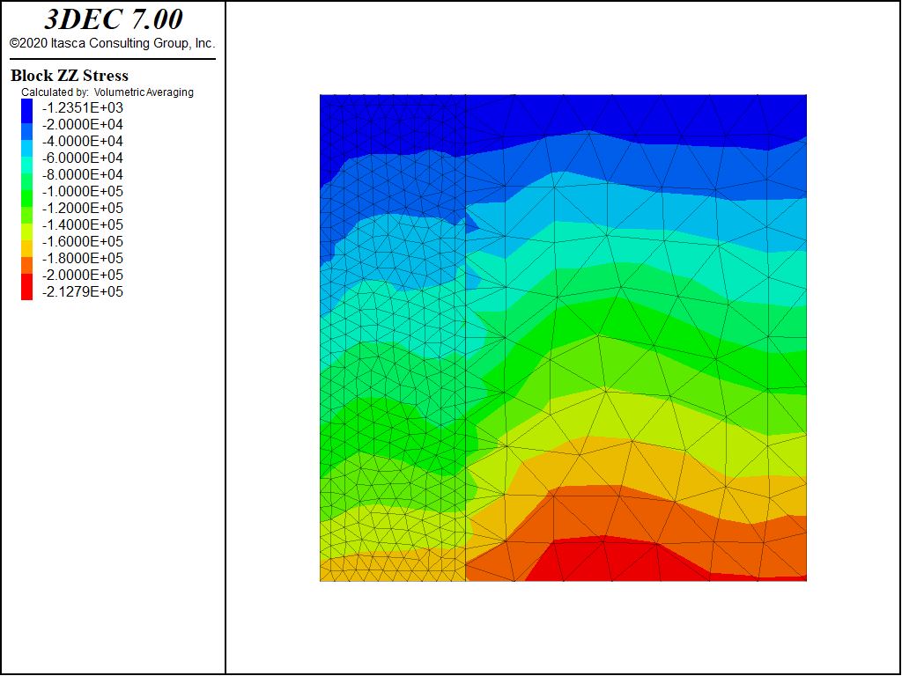
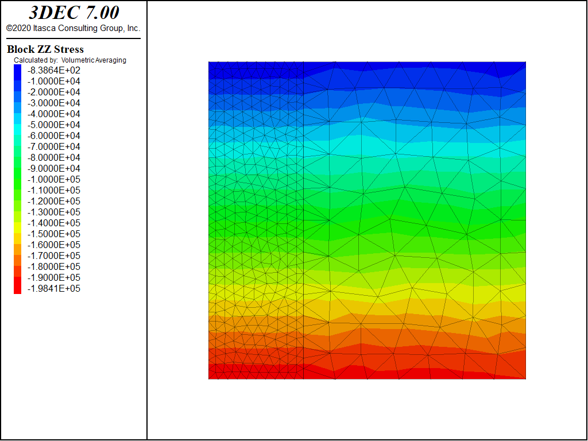

非均匀网格模型中的压实
让非均匀网格模型在重力作用下达到平衡时，有时会出现令人困惑的结果。由不同尺寸可变形块体组成的模型，通常具有非均匀网格。当块体采用莫尔—库仑模型（或其他非线性本构模型）时，即使边界平直、自由表面平坦，最终应力状态和位移分布也不均匀。下例数据文件演示了这一效应（生成的竖直应力等值线图见后图）：
在非均匀网格模型中初始化非均匀应力
model new
model random 10000
model large-strain off
block create brick 0,10 0,2 0,10
;
block cut joint-set dip 90.0 dip-direction 90 origin 3,0,0 join
block hide range pos-x 3 10
block zone generate edgelength 0.3
block hide off
block zone generate edgelength 1.0
;
block zone cmodel assign mohr-coulomb
block zone prop dens 2000 bulk 2e8 shear 1e8 friction 30
;
model gravity 0 0 -10
block gridpoint apply vel-x = 0.0 range pos-x 0.0
block gridpoint apply vel-x = 0.0 range pos-x 10.0
block gridpoint apply vel-y = 0.0 range pos-y 0.0
block gridpoint apply vel-y = 0.0 range pos-y 2.0
block gridpoint apply vel-z = 0.0 range pos-z 0.0
;
model history mechanical unbalanced-maximum
model save 'initial'
model solve
model save 'initial-1'


图 1：非均匀应力
由于四个侧面采用滚动边界，我们可能预期材料在各侧向下移动相同距离。然而，各块体中的网格单元尺寸并不相同。对于静力分析，3DEC 尝试使所有网格单元的时间步长相等，因此会增大小网格单元网格点的惯性质量，以补偿尺寸差异。于是，这些网格点的加速比大网格单元的网格点更慢。这不会影响线性材料的最终状态，却会使具有路径依赖性的材料产生非均匀性。对于无黏聚力的莫尔—库仑材料，情况类似于从一定高度将砂落入容器，却期望最终状态均匀。实际上，由于围压不会立即建立，会产生大量塑性流动。即使采用均匀网格模型，这种方法也不好，因为水平应力会依赖该过程的动力学特征。
最佳解决方法是使用 block insitu 命令，设置符合目标 \(K_o\) 值（水平应力与竖直应力之比）的初始应力。例如，可以将前述数据文件中的 求解模型（model solve） 命令替换为以下各行：
block insitu topography ratio-x 0.75 ratio-y 0.75
model solve
当 \(K_o\) = 0.75 时，可达到稳定状态；达到平衡所需步数更少，而且应力状态均匀（见下图）。注意，仍存在轻微不均匀性，但这与等值线绘制方法和网格粗糙程度有关。
另一种方法是在初始平衡计算时让模型采用弹性行为，随后为最终状态改用非线性行为模型。将 求解模型（model solve） 命令替换为以下各行：
model solve elastic
结果与下图相同。在压实过程中防止材料屈服，但在达到平衡后恢复原始属性。


图 2：均匀应力
| 这些内容对您有帮助吗？… | FLAC3D © 2019, Itasca | 原文更新于 2020 年 10 月 8 日 |